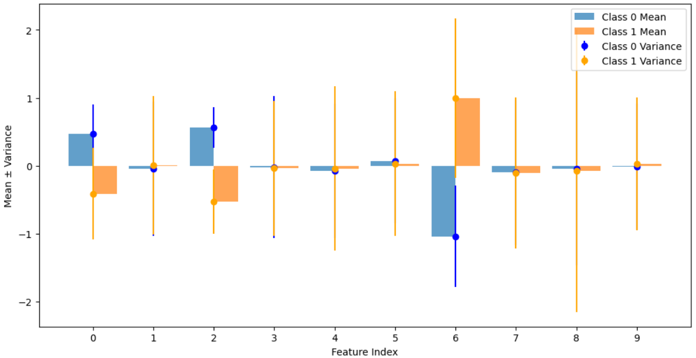
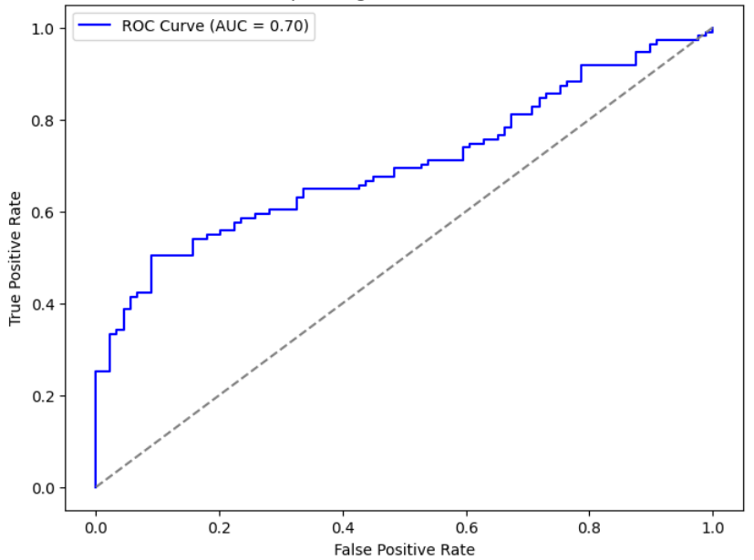
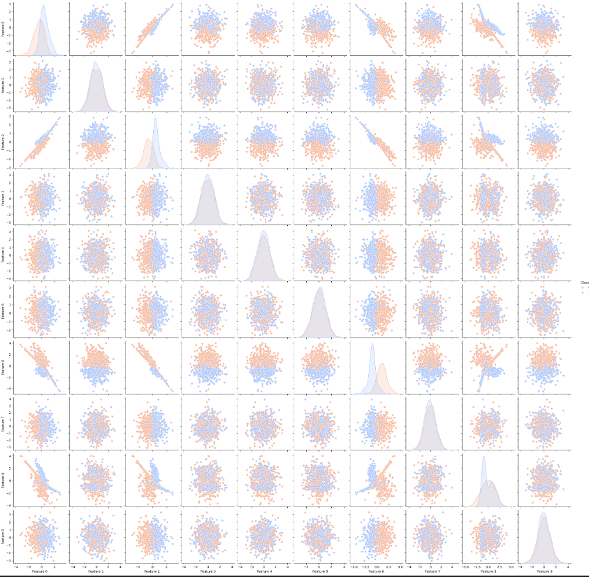
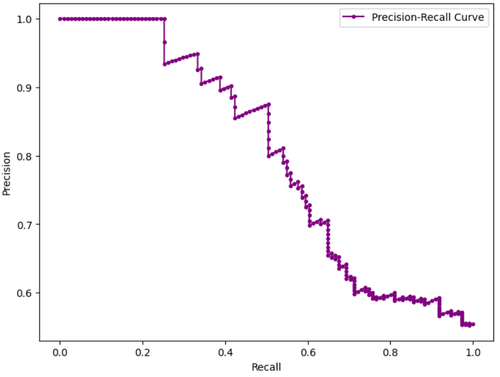
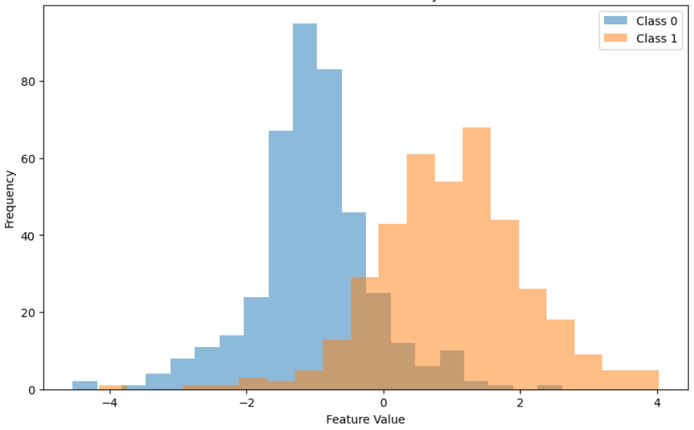
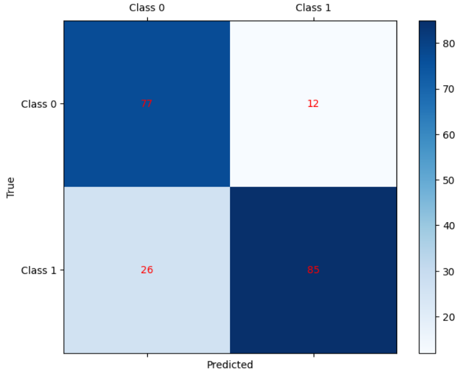

Understanding the Basic Architecture
In this deep dive, we'll explore Naive Bayes from implementation to insights, examining how they classify.
Naive Bayes Class Implementation
class NaiveBayes:
def __init__(self):
self._mean=None
self._var=None
self._priors=None
self._classes=None
Required Functions:
- fit - Train the model on data
- grow_tree - Recursively build the tree
- best_criteria - Find optimal splitting criteria
- information_gain - Calculate entropy reduction
- split - Divide dataset based on feature value
- most_common_label - Find majority class
- predict - Make predictions with trained model
- traverse_tree - Navigate decision paths
The model starts with all data points at the root and recursively divides the dataset at each step to maximize information gain, creating a tree-like structure of decisions.
Model Performance Visualization

Shows the distribution different feature wise.

Shows the roc curve as model evaluation which Shows the relation between tpr and fpr.

It shows the relation between different features how much they are dependent on each other.

The accuracy changement with changing max_depth

this shows how the features are distributed classwise.

shows the accuracy and Precision.
Key Learnings and Challenges
- Simple and Fast The independence assumption greatly reduces the complexity of the model
- Text Classification Works Well with High-Dimensional Data
- Independence Assumption all features are independent, which is rarely true in practice.
- Less data Since it relies on the probabilistic distribution of each feature, it doesn't require large amounts of data for each class.
- Zero Probability problem This can be mitigated using Laplace smoothing.
- Poor Performance with Highly Complex Data decision trees or neural networks may outperform Naive Bayes.
Model Performance Metrics
Accuracy
81.00%
ROC Curve (AUC)
0.70